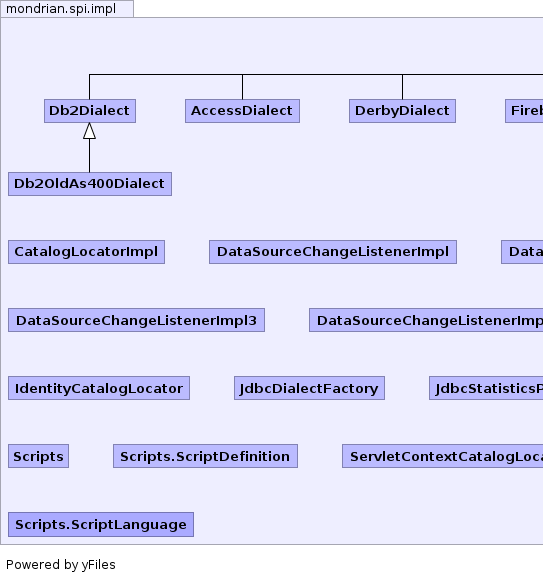
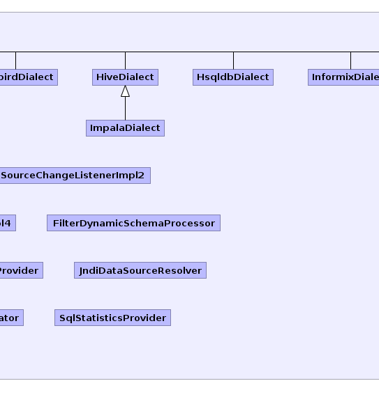
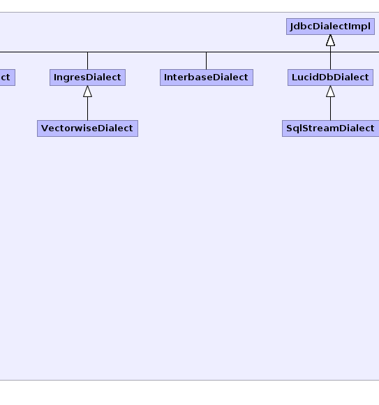
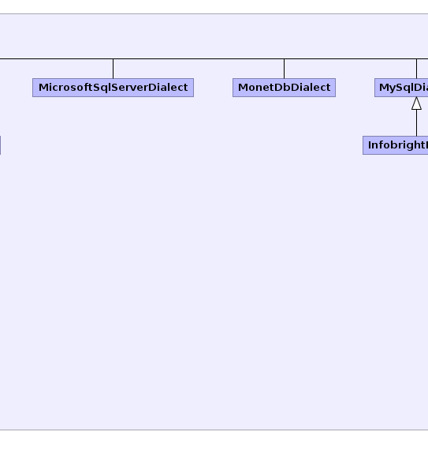
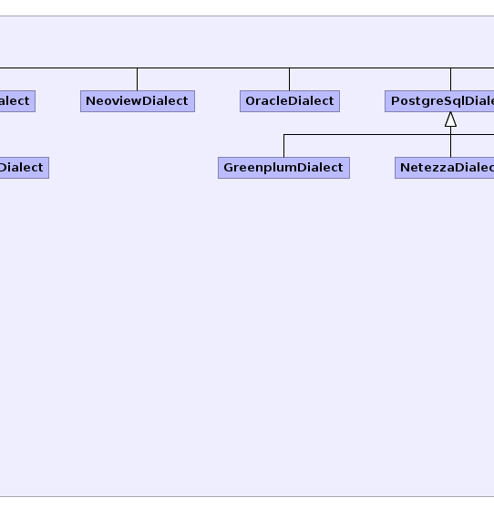
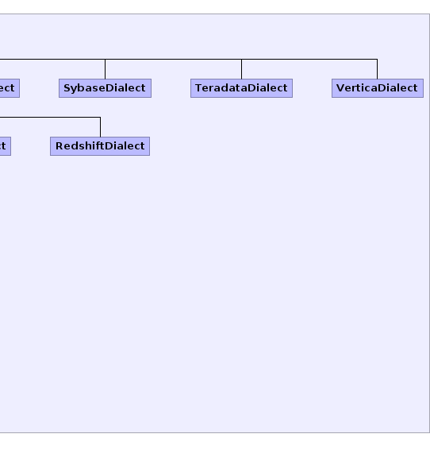

- Overview
- Package
- Class
- Tree
- Deprecated
- Index
- Help
mondrian.spi package.See: Description
| Class | Description |
|---|---|
| AccessDialect |
Implementation of
Dialect for the Microsoft Access
database (also called the JET Engine). |
| CatalogLocatorImpl |
CatalogLocator which returns the catalog URI unchanged.
|
| DataSourceChangeListenerImpl |
Default implementation of a data source change listener
that always returns that the datasource is unchanged.
|
| DataSourceChangeListenerImpl2 |
Default implementation of a data source change listener
that always returns that the datasource is changed.
|
| DataSourceChangeListenerImpl3 |
Default implementation of a data source change listener
that always returns that the datasource is changed.
|
| DataSourceChangeListenerImpl4 |
Default implementation of a data source change listener
that always returns that the datasource is changed.
|
| Db2Dialect |
Implementation of
Dialect for the IBM DB2 database. |
| Db2OldAs400Dialect |
Implementation of
Dialect for old versions of the IBM
DB2/AS400 database. |
| DerbyDialect |
Implementation of
Dialect for the Apache Derby database. |
| FilterDynamicSchemaProcessor |
Implementation of
DynamicSchemaProcessor which allows a derived class
to easily process a schema file. |
| FirebirdDialect |
Implementation of
Dialect for the Firebird database. |
| GreenplumDialect |
Implementation of
Dialect for the GreenplumSQL database. |
| HiveDialect |
Implementation of
Dialect for the Hive database. |
| HsqldbDialect |
Implementation of
Dialect for the Hsqldb database. |
| IdentityCatalogLocator |
Implementation of
CatalogLocator that returns
the path unchanged. |
| ImpalaDialect |
Dialect for Cloudera's Impala DB.
|
| InfobrightDialect |
Implementation of
Dialect for the Infobright database. |
| InformixDialect |
Implementation of
Dialect for the Informix database. |
| IngresDialect |
Implementation of
Dialect for the Ingres database. |
| InterbaseDialect |
Implementation of
Dialect for the Interbase database. |
| JdbcDialectFactory |
Implementation of
DialectFactory for subclasses
of JdbcDialectImpl. |
| JdbcDialectImpl |
Implementation of
Dialect based on a JDBC connection and metadata. |
| JdbcStatisticsProvider |
Implementation of
StatisticsProvider that uses JDBC
metadata calls to count rows and distinct values. |
| JndiDataSourceResolver |
Implementation of
DataSourceResolver that looks up
a data source using JNDI. |
| LucidDbDialect |
Implementation of
Dialect for the LucidDB database. |
| MicrosoftSqlServerDialect |
Implementation of
Dialect for the Microsoft SQL Server
database. |
| MonetDbDialect |
Implementation of
Dialect for the MonetDB database. |
| MySqlDialect |
Implementation of
Dialect for the MySQL database. |
| NeoviewDialect |
Implementation of
Dialect for the Neoview database. |
| NetezzaDialect |
Implementation of
Dialect for the Netezza database. |
| OracleDialect |
Implementation of
Dialect for the Oracle database. |
| PostgreSqlDialect |
Implementation of
Dialect for the PostgreSQL database. |
| RedshiftDialect |
User: cboyden
Date: 2/8/13
|
| Scripts |
Provides implementations of a variety of SPIs using scripting.
|
| Scripts.ScriptDefinition | |
| ServletContextCatalogLocator |
Locates a catalog based upon a
ServletContext.
If the catalog URI is an absolute path, it refers to a resource inside our
WAR file, so replace the URL. |
| SqlStatisticsProvider |
Implementation of
StatisticsProvider that generates
SQL queries to count rows and distinct values. |
| SqlStreamDialect |
Implementation of
Dialect for the SQLstream streaming
SQL system. |
| SybaseDialect |
Implementation of
Dialect for the Sybase database. |
| TeradataDialect |
Implementation of
Dialect for the Teradata database. |
| VectorwiseDialect |
Implementation of
Dialect for the Vertica database. |
| VerticaDialect |
Implementation of
Dialect for the Vertica database. |
| Enum | Description |
|---|---|
| Scripts.ScriptLanguage |
mondrian.spi package.|  |  |  |  |  |  |